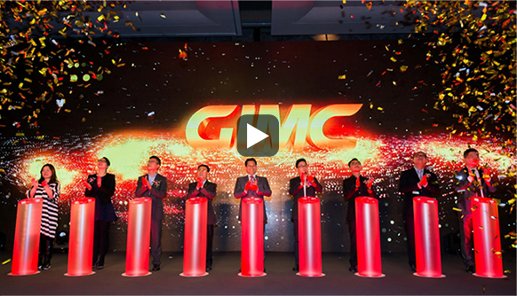

广东省广告集团股份有限公司（简称“省广”或“GIMC”）成立于1979年，是我国最早一批成立的广告公司，也是目前我国最具规模的整合营销传播集团，被业内誉为中国广告业的扛旗者。2010年5月6日，在深交所中小板挂牌上市（股票简称：省广股份，股票代码：002400），成为“中国广告第一股”。
作为中国4A协会副理事长单位、中国广告协会理事单位、广东省广告协会副会长单位、广州市广告行业协会会长单位、国家一级广告企业，2008年2月，GIMC被评定为“广东省文化产业示范基地”，2008年9月，被文化部命名为“国家文化
产业示范基地”。
打造多方共赢的平台生态系统是GIMC的使命。在不断的发展过程中，GIMC一直坚持以“国际化IMC平台运营商”为发展愿景，为客户提供一站式的全方位整合营销服务。通过打造按行业细分的“整合营销传播专业运营平台”与按专业服务划分的“整合营销传播专业协作平台”，以及媒介运营平台、大数据平台，让更多的优秀资源融入省广，将服务范围覆盖到整合营销价值链的各个细分领域，最终实现全产业链运营，从而为客户创造更高的价值。
截止到目前，GIMC拥有各类专业技术人员3000余人，为国内外超过300家的知名企业提供整合营销服务，形成了以广州、北京、上海、武汉、成都为主干，覆盖全国的客户服务网络。坚持创新、勇于变革、共创价值、多方共赢是GIMC的价值观。自成立以来，GIMC一直将创新融入到企业的发展之中，不断创新、勇于变革，一直引领行业之先。现在，GIMC已不满足于继续担纲中国广告业的扛旗者，将通过平台战略创新转型思维，构建多方共赢的平台化商业模式，最终将GIMC打造为“国际化IMC平台运营商”。

我们的发展历程
2013
省广股份市值突破100亿2012
省广股份首次名列中国企业500强（服务业）2011
公司加快收购兼并步伐延伸产业链2010
广东省广告股份有限公司成功上市2009
荣耀省广30年


GIMCVS易车，汽车电商“风口”上的2种姿势
2014年11月易车市值接近汽车之家时，正值公布上季度 财报，而在2014年Q3业绩易车网净1.86亿，超过汽车 1.71亿。看来美国投资人是完全按净利润、自由现金流 为这两家公司估值，对汽车电商...
陈小蚊 2015-11-12 06:57GIMCVS易车，汽车电商“风口”上的2种姿势
2014年11月易车市值接近汽车之家时，正值公布上季度 财报，而在2014年Q3业绩易车网净1.86亿，超过汽车 1.71亿。看来美国投资人是完全按净利润、自由现金流 为这两家公司估值，对汽车电商...
陈小蚊 2015-11-12 06:57GIMCVS易车，汽车电商“风口”上的2种姿势
2014年11月易车市值接近汽车之家时，正值公布上季度 财报，而在2014年Q3业绩易车网净1.86亿，超过汽车 1.71亿。看来美国投资人是完全按净利润、自由现金流 为这两家公司估值，对汽车电商...
陈小蚊 2015-11-12 06:57GIMCVS易车，汽车电商“风口”上的2种姿势
2014年11月易车市值接近汽车之家时，正值公布上季度 财报，而在2014年Q3业绩易车网净1.86亿，超过汽车 1.71亿。看来美国投资人是完全按净利润、自由现金流 为这两家公司估值，对汽车电商...
陈小蚊 2015-11-12 06:57